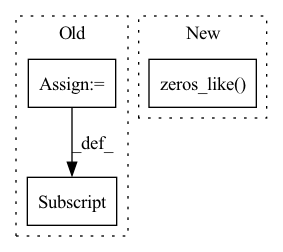

Pattern ID :2617
Before Change
// if user supplies a mask that is only off by one from the source sequence, resolve it for them
mask = kwargs.get("mask", None)
if mask is not None and mask.shape[1] == x.shape[1]:
mask = mask[:, :-1]
kwargs["mask"] = mask
out = self.net(xi, **kwargs)
loss = F.cross_entropy(out.transpose(1, 2), xo, ignore_index = self.ignore_index)After Change
rand[:, 0] = -torch.finfo(rand.dtype).max // first token should not be masked out
num_mask = min(int(seq * self.mask_prob), seq - 1)
indices = rand.topk(num_mask, dim = -1).indices
mask = ~torch.zeros_like( inp) .scatter(1, indices, 1.).bool()
kwargs.update(context_mask = mask)
out = self.net(inp, **kwargs)In pattern: SUPERPATTERN
Frequency: 3
Non-data size: 3
Instances Fragment ID: 14985925
Project Name: lucidrains/x-transformers
Commit Name: 595a4745d532c20b8ebd310256c342e946a4cef7
Time: 2022-11-02
Author: lucidrains@gmail.com
File Name: x_transformers/autoregressive_wrapper.py
M Class Name: AutoregressiveWrapper
N Class Name: AutoregressiveWrapper
M Method Name: forward(2)
N Method Name: forward(2)
M Parent Class: nn.Module
N Parent Class: nn.Module
M File Name: x_transformers/autoregressive_wrapper.py
N File Name: x_transformers/autoregressive_wrapper.py
M Start Line: 107
M End Line: 118
N Start Line: 122
N End Line: 142
Before Change
for idx in range(batch_size):
target_ball_global[idx] = create_target_ball(global_ball_pos_xy[idx], sigma=1., w=self.w, h=self.h, thresh_mask=0.01, device=self.device)
target_ball_local[idx] = create_target_ball(local_ball_pos_xy[idx], sigma=1., w=self.w, h=self.h, thresh_mask=0.01, device=self.device)
target_events[idx] = create_target_events(event_class[idx], device=self.device)
global_ball_loss = self.ball_loss_criterion(pred_ball_global, target_ball_global)
local_ball_loss = self.ball_loss_criterion(pred_ball_local, target_ball_local)After Change
if pred_ball_local is not None:
log_vars_idx += 1
target_ball_local = torch.zeros_like( pred_ball_local)
for sample_idx in range(batch_size):
target_ball_local[sample_idx] = create_target_ball(local_ball_pos_xy[sample_idx], sigma=1., w=self.w,
h=self.h, thresh_mask=0.01, device=self.device)
local_ball_loss = self.ball_loss_criterion(pred_ball_local, target_ball_local) Fragment ID: 14985943
Project Name: maudzung/ttnet-real-time-analysis-system-for-table-tennis-pytorch
Commit Name: 4e2a9eb758dbd4cdd39420a237e25ba581182193
Time: 2020-06-01
Author: nguyenmaudung93.kstn@gmail.com
File Name: src/models/multi_task_learning_model.py
M Class Name: Multi_Task_Learning_Model
N Class Name: Multi_Task_Learning_Model
M Method Name: forward(7)
N Method Name: forward(7)
M Parent Class: nn.Module
N Parent Class: nn.Module
M File Name: src/models/multi_task_learning_model.py
N File Name: src/models/multi_task_learning_model.py
M Start Line: 38
M End Line: 53
N Start Line: 34
N End Line: 71
Before Change
mask = torch.ne(base_mask, 0).unsqueeze(-1)
size = [-1] * mask.dim()
size[-1] = self.frame_period
mask = mask.expand(size)
mask = mask.reshape(signal_shape)
After Change
r = torch.ceil(phase)
r = torch.cat((r[..., :1] * 0, r), dim=-1)
pulse_pos = torch.ge(r[..., 1:] - r[..., :-1], 1)
e = torch.zeros_like( p)
e[pulse_pos] = torch.sqrt(p[pulse_pos])
elif self.voiced_region == "sinusoidal":
e = torch.sin((2 * torch.pi) * phase)
else: Fragment ID: 14985923
Project Name: sp-nitech/diffsptk
Commit Name: 72fcde4bb44021e8c00f3b017785d97afc934e29
Time: 2023-01-11
Author: takenori.yoshimura24@gmail.com
File Name: diffsptk/core/excite.py
M Class Name: ExcitationGeneration
N Class Name: ExcitationGeneration
M Method Name: forward(2)
N Method Name: forward(2)
M Parent Class: nn.Module
N Parent Class: nn.Module
M File Name: diffsptk/core/excite.py
N File Name: diffsptk/core/excite.py
M Start Line: 77
M End Line: 112
N Start Line: 77
N End Line: 105